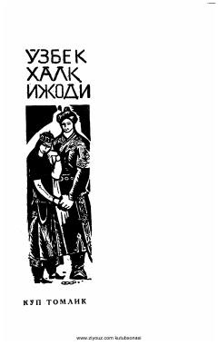

PAMuhammadqul Jomrot o'g'li Po'lkan tomonidan kuylangan o'zbek xalq dostoni.
Ushbu kitob mashhur baxshi Muhammadqul Jomrot o'g'li Po'lkan tomonidan kuylangan o'zbek xalq dostoni hisoblanadi. Asar o'zbek xalq og'zaki ijodining boy an'analarini o'zida mujassam etgan bo'lib, xalq dostonchiligi namunasi sifatida nashr etilgan.